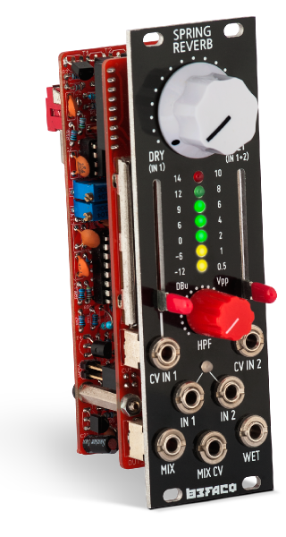

Befaco Spring Reverb Eurorack Module

I recently finished building my very own Befaco Spring Reverb module for Eurorack synthesizer, by assembling a DIY kit from the awesome people at Befaco. It was a very challenging, but all the more fun project. I can only hope it works as I haven't tested it yet... It's no doubt going to sound great! :)